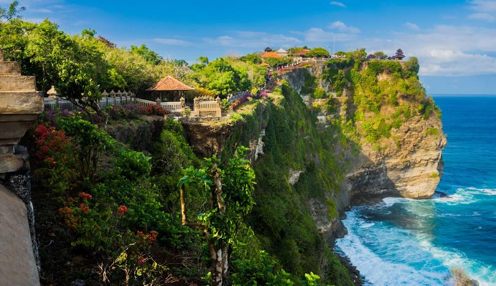
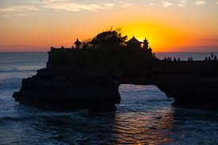
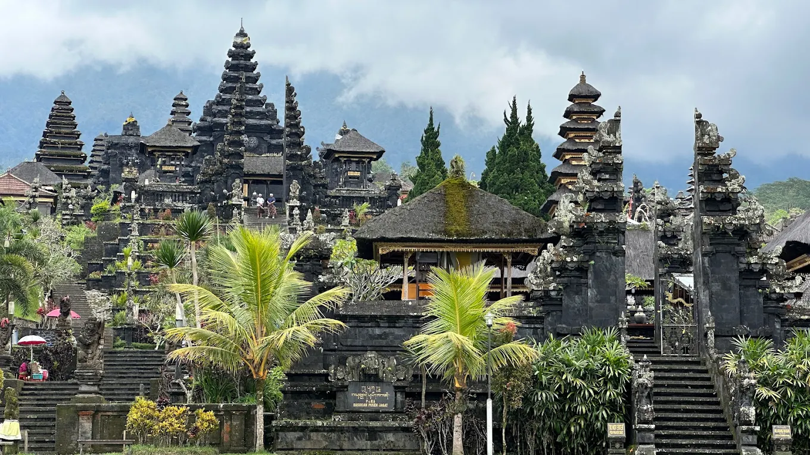
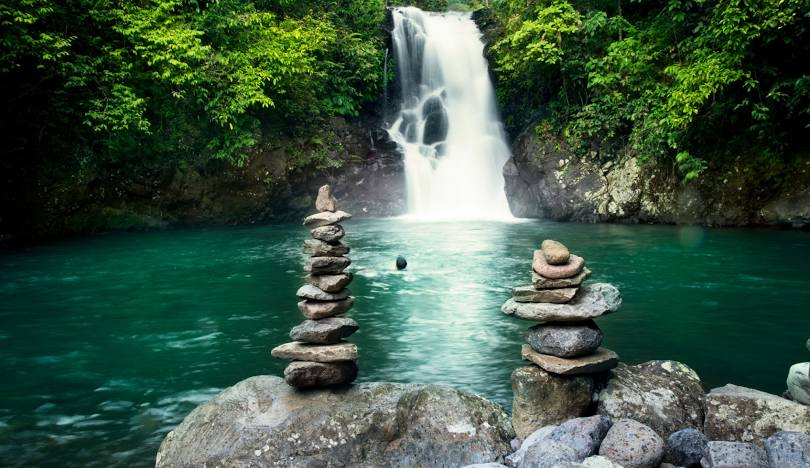
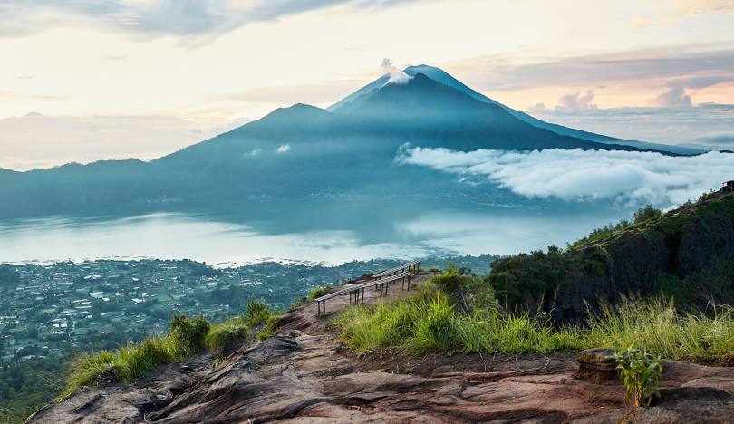

Pura Uluwatu terkenal dengan keindahan alam dan letaknya yang strategis. Secara etimologis, Ulu berarti ujung, Watu berarti Watu.

Pura Luhur Ratu
Tentang Luhur Ratu

Tanah Lot
Click disini untuk Informasi selanjutnya

Pura Agung Besakih
Click disini untuk Informasi selanjutnya

Aling Aling Waterfall
Click disini untuk Informasi selanjutnya

Gunung Batur Bali
Click disini untuk Informasi selanjutnya

Tari Kecak
Click disini untuk Informasi selanjutnya